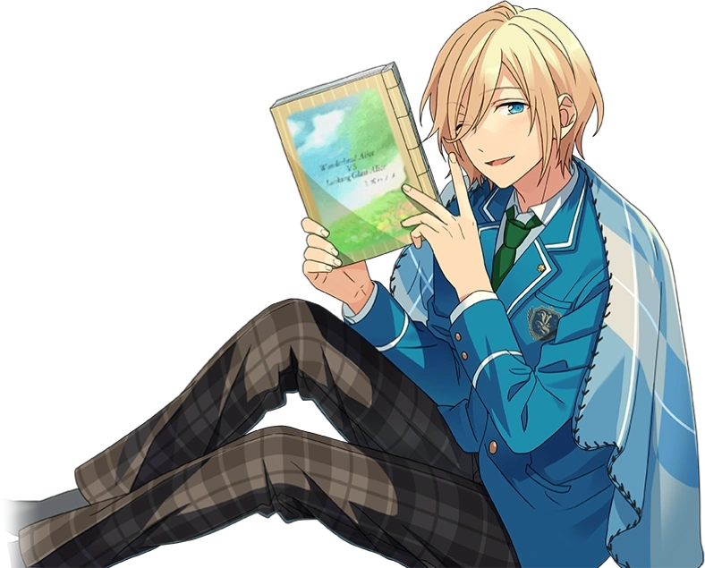

This page keeps track of the stories and characters who do know that Keito is the mangaka Mizuhanome-sensei. Characters that partially know are either aware of the name, or aware that Keito can draw, but have not connected the two. Unconfirmed names are ones whose stories haven't been combed through to definitively say they do not know Keito is Mizuhanome.
This page will update and be corrected over time.

Before attending Yumenosaki, Keito wanted to become a mangaka. Mizuhanome-sensei is the pen name Keito uses for his doujinshi. It’s Keito worst-kept secret, but he still attempts to keep it discreet for the sake of Akatsuki’s image (Philosopher's Guidance). During his time in Yumenosaki, Keito drew posters for events around campus and kept up his manga as a hobby. He also has an eye for graphic design and data visualization (Philosopher’s Guidance). When it comes to medium, he is more familiar with traditional art than digital art (Philosopher’s Guidance, Scroll of the Elements). His style is described as cute and sparkly, like when he drew Kuro a portrait for his birthday.
Anzu is his biggest fan and constantly lets his secret out to others. Her art style resembles Keito’s (Tea Party). One known work of his is "Wonderland Alice VS. Looking Glass Alice": it is unfinished, so Eichi entrusts Anzu to finish drawing the rest (Tea Party). Mizuhanome has also written text-only fanfiction for a discontinued series (Biblio) and has a fanart book (Mission of the Spy), and the stage play adaptation of Pirate Festival retcons the lore of Captain Kidoairaku, the mascot Midori becomes infatuated with, so that Keito is its creator.